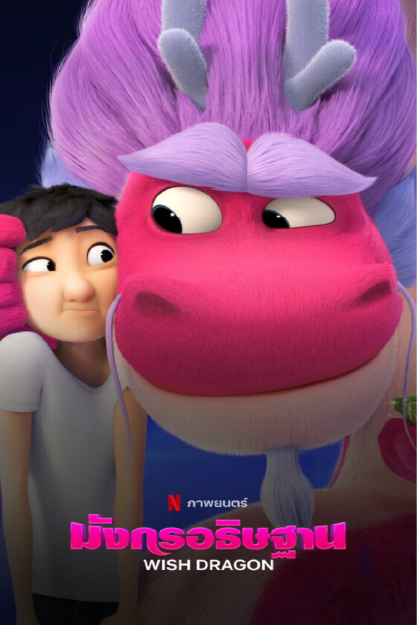

|  |
|---|
Wish Dragon เนื้อเรื่องย่อ : เป็นเรื่องราวของ ติ่น เด็กชายที่แอบทำงานขี่รถส่งของในวัยเรียนเพื่อเก็บเงินซื้อของบางอย่างมาใส่และเตรียมเซอร์ไพรส์วันเกิดเพื่อนในวัยเด็กของติ่น ชื่อ หลี่นา ด้วยความขยันและซื่อสัตย์เป็นคนดีของติ่น ทำให้เทพเจ้าปลอมตัวเป็นชายยาจกและมอบถ้วยชาโบราณให้เขา ในถ้วยชาโบราณมีมังกรชื่อ หลงจู มังกรอธิษฐานที่ติดอยู่ในถ้วยชามานับพันปี เขาขอให้ติ่นขอพรมาสามข้อเพื่อที่ตัวเขาจะได้เป็นอิสระไปเกิดใหม่บนสวรรค์ แต่การขอพรของติ่นนั้นช่างแตกต่างจากคนอื่น ทำให้หลงจูจากมังกรผู้ล้าหลังสุดป่วนคิดแต่เรื่องทอง ๆ เริ่มตระหนักถึงสิ่งสำคัญบางอย่างได้ แต่ในขณะนั้นพวกตัวร้ายก็มักจะเข้ามาขัดขวางอยู่ตลอด
สามารถดูเต็มๆได้ที่ Netflix คลิกที่ลิ้งก์ |
|---|
 |
|---|